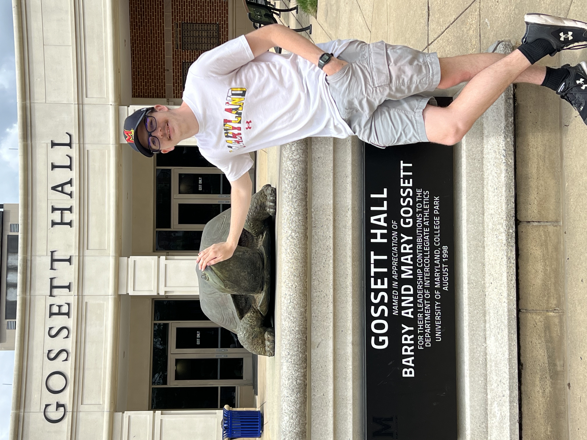

Journalism Student, Philip Merrill College of Journalism
I broadcast every game for the University of Maryland club ice hockey team. I provide color commentary during the games and set up all the technical equipment for the live streams, working at every home and away game during the season.
I write features and game stories published to the Maryland Baseball Network website for a select number of Maryland baseball games throughout the season. For home games, I additionally interview players and coaches to collect quotes for the game stories.
I work at every Washington Capitals home game to assist with the “Mites on Ice” mini- game that occurs during the first intermission. I am responsible for managing the schedules of the teams, ensuring everyone gets to the ice on time and occasionally officiating the mini-game.
Contact me